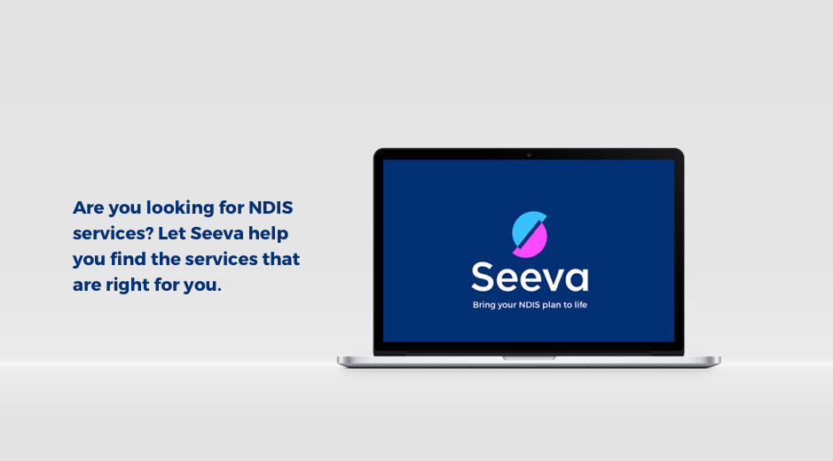
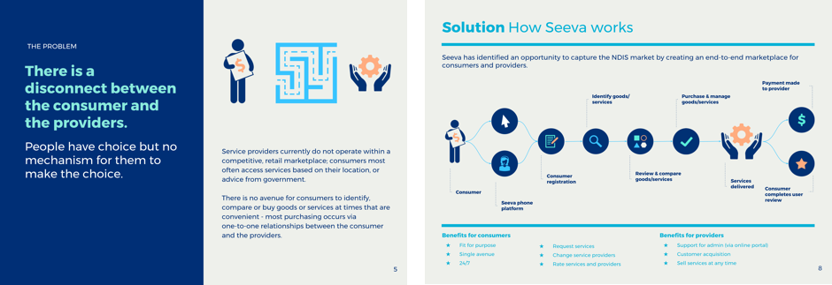
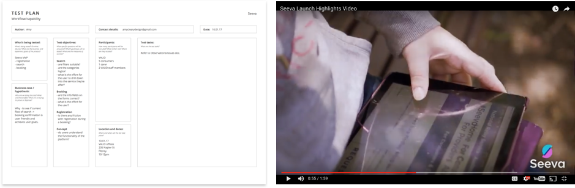
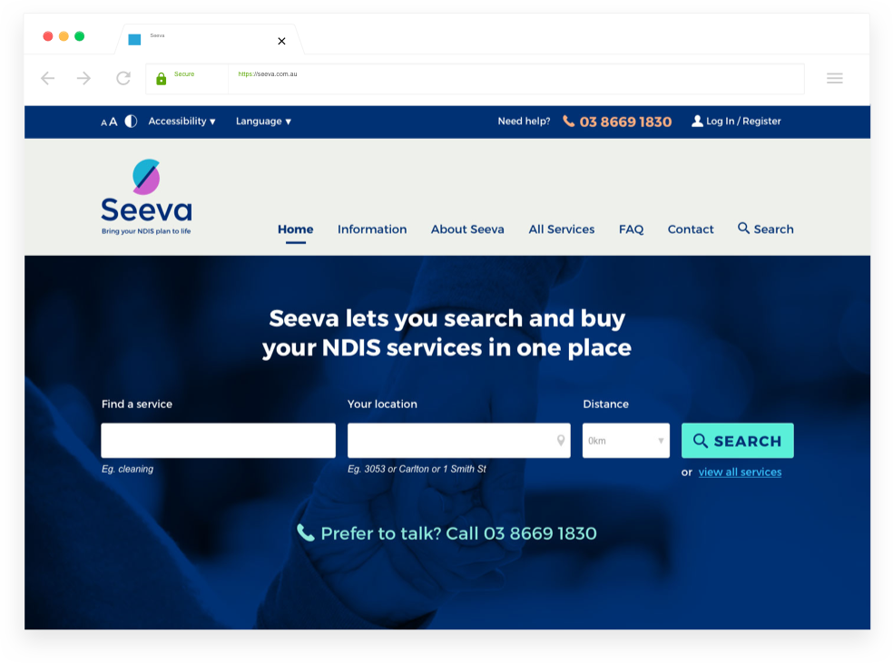

Seeva
AN END-TO-END MARKET PLATFORM
Seeva is a marketplace start-up connecting NDIS consumers with a multitude of service providers. I was engaged to lead this project from user research and early planning into launch in a rapid timeframe (12 weeks).
INTERPRETING THE INFORMATION
My involvement began after research and preliminary prototype testing had been conducted by another agency. I took their findings and iterated the design. I identified and consolidated the user challenges and insights into a narrative communicating the complexity of different user journeys. This also formed the basis of a pitch deck to be used for securing investor funding.
Visual communication is key
ACCESSIBILITY & USABILITY TESTING
The main challenge was to ensure the user experience met the needs of consumers with a range of technology and accessibility issues, such as vision or hearing impairment and learning disabilities. It was also important to consider more proficient usability for carers and service providers. Throughout the design process, this was addressed through usability testing and workshops with participants from all segments. Visual design was also tested against WCAG3 accessibility criteria.
Usability testing with the right audience
MODELLING THE INTERACTIONS
Invision prototypes were used for usability testing and demonstrating the interactions for stakeholders and the development team. The primary interaction of the product was the search and booking flow, which surfaces information from myriad providers via different pathways. I designed the responsive UI and digital style guide based on existing brand assets.
Seeva landing page
DESIGN CREDIT | Brand design by The Contenders